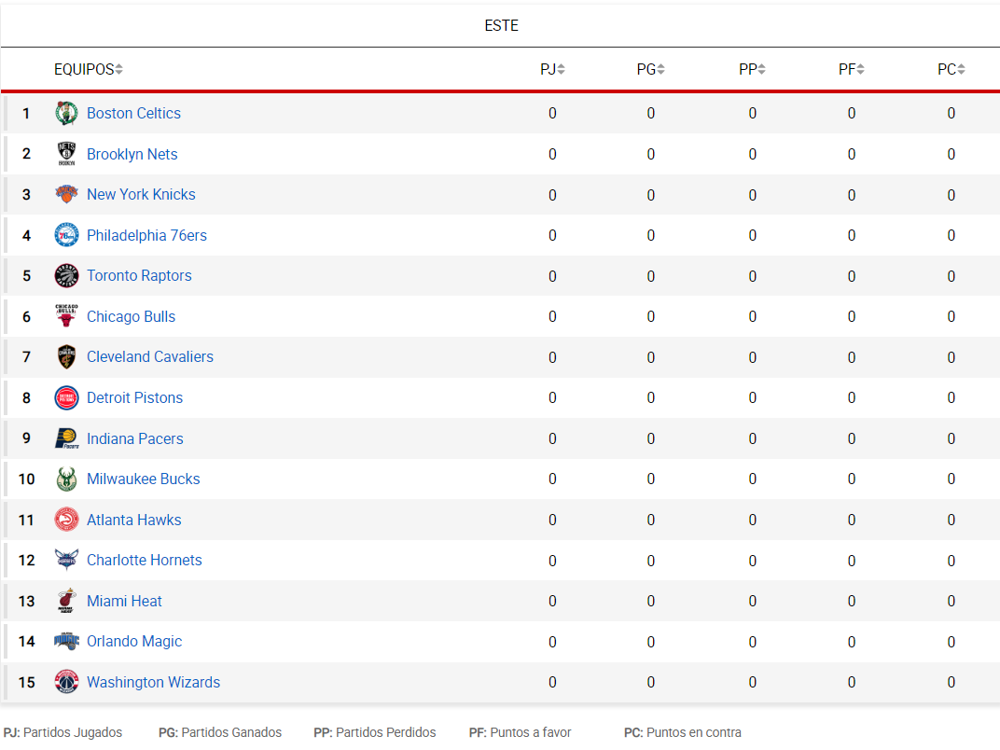

La Conferencia Este es una de las dos conferencias, junto a la Conferencia Oeste, que componen la estructura organizativa de la NBA. Fundada en 1946, ambas están compuestas por quince equipos y organizadas en tres divisiones de cinco equipos cada una. Se llamó "Eastern Division" ("División Este") hasta 1970, cuando se renombró a ""Eastern Conference" ("Conferencia Este"). En total, por cada conferencia se clasifican 8 equipos. Los líderes de cada división se clasifican matemáticamente para disputar los playoffs, mientras que los cinco equipos restantes serán los que posean mejor balance victorias-derrotas.
Campeones de la Conferencia Este: 1947: Philadelphia Warriors. 1948: Philadelphia Warriors. 1949: Washington Capitols. 1950: Syracuse Nationals. 1951: New York Knicks. 1952: New York Knicks. 1953: New York Knicks. 1954: Syracuse Nationals. 1955: Syracuse Nationals. 1956: Philadelphia Warriors. 1957: Boston Celtics. 1958: Boston Celtics. 1959: Boston Celtics. 1960: Boston Celtics. 1961: Boston Celtics. 1962: Boston Celtics. 1963: Boston Celtics. 1964: Boston Celtics. 1965: Boston Celtics. 1966: Boston Celtics. 1967: Philadelphia 76ers. 1968: Boston Celtics. 1969: Boston Celtics. 1970: New York Knicks. 1971: Baltimore Bullets. 1972: New York Knicks. 1973: New York Knicks. 1974: Boston Celtics. 1975: Washington Bullets. 1976: Boston Celtics. 1977: Philadelphia 76ers. 1978: Washington Bullets. 1979: Washington Bullets. 1980: Philadelphia 76ers. 1981: Boston Celtics. 1982: Philadelphia 76ers. 1983: Philadelphia 76ers. 1984: Boston Celtics. 1985: Boston Celtics. 1986: Boston Celtics. 1987: Boston Celtics. 1988: Detroit Pistons. 1989: Detroit Pistons. 1990: Detroit Pistons. 1991: Chicago Bulls. 1992: Chicago Bulls. 1993: Chicago Bulls. 1994: New York Knicks. 1995: Orlando Magic. 1996: Chicago Bulls. 1997: Chicago Bulls. 1998: Chicago Bulls. 1999: New York Knicks. 2000: Indiana Pacers. 2001: Philadelphia 76ers. 2002: New Jersey Nets. 2003: New Jersey Nets. 2004: Detroit Pistons. 2005: Detroit Pistons. 2006: Miami Heat. 2007: Cleveland Cavaliers. 2008: Boston Celtics. 2009: Orlando Magic. 2010: Boston Celtics. 2011: Miami Heat. 2012: Miami Heat. 2013: Miami Heat. 2014: Miami Heat. 2015: Cleveland Cavaliers. 2016: Cleveland Cavaliers. 2017: Cleveland Cavaliers. 2018: Cleveland Cavaliers. 2019: Toronto Raptors. 2020: Miami Heat. 2021: Milwaukee Bucks.
Títulos: 21: Boston Celtics. 9: Philadelphia 76ers / Syracuse Nationals. 8: New York Knicks. 6: Chicago Bulls. 6: Miami Heat. 5: Detroit Pistons. 5: Cleveland Cavaliers. 4: Washington Wizards / Bullets. 3: Golden State / Philadelphia Warriors. 2: New Jersey Nets. 2: Orlando Magic. 1: Washington Capitols. 1: Indiana Pacers. 1: Toronto Raptors. 1: Milwaukee Bucks.